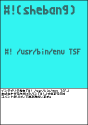

「TSF2KEV」はプログラミング言語「TSF_Tab-Separated-Forth」のD言語とPythonによる実装です。
version(branch):20170718T073839 modify:20170730U102111(執筆途中です)
TSFの解説、目次上はひとまとめですが実際にはモジュール毎に複数ページへ分割してます(分割予定)。
- TSF+TSF_Io(index.html)
- TSF_Forth(forth.html)
- TSF_Calc(calc.html)
- TSF_Time(time.html)
- TSF_Time(urlpath.html)
- TSF_Match(match.html)
- TSF_Trans(trance.html)
⓪-2．インストール/アンインストール＆セットアップ
gitでリポジトリ「https://github.com/ooblog/TSF2KEV.git」を「Clone」するか、
「https://github.com/ooblog/TSF2KEV/archive/master.zip」を「Download ZIP」して展開すると、
「TSF2KEV」フォルダが作成されます。
- プログラミング言語「TSF_Tab-Separated-Forth」開発中。
- https://github.com/ooblog/TSF2KEV
VimでTSFを編集する場合は「vimsyntax/tsf.vim」を「~/.vim/syntax/tsf.vim」にコピー。
VimでKEVを用いた漢直入力などをする場合は「メニュー→編集(E)→起動時の設定(S)」で「~/.vimrc」を開いて「filetype=tsf」や「:!TSF %」を追記。
syntax on
au BufRead,BufNewFile *.tsf set filetype=tsf
autocmd BufNewFile,BufRead *.tsf nnoremap <F5> :!TSF %<CR>
command KEV2tsf :source ~/TSF2KEV/KEV2/kanedit.vim
Vimエディタでの設定が成功するとシンタックスが着色されるはずです。

D言語の環境が用意できる場合「TSF_DMDcompile.sh」のように「TSF」の実行バイナリがコンパイルできます。
dmd TSF.d TSF_Io.d TSF_Forth.d TSF_Calc.d TSF_Time.d TSF_Urlpath.d TSF_Match.d TSF_Trans.d
実行バイナリ「TSF」を環境変数「$PATH」が通るフォルダ(例えばPuppyLinuxの場合「~/my-applications/bin」など)にコピーすると「*.tsf」が実行できるようになるはずです。
- env - Wikipedia
- https://ja.wikipedia.org/wiki/Env
- シバン (Unix) - Wikipedia
- https://ja.wikipedia.org/wiki/%E3%82%B7%E3%83%90%E3%83%B3_(Unix)
⓪-3．その他現在わかっている不具合や今後の課題などソフト使用の補足ガイドライン
未実装の#関数カードや#関数カード内の未実装な機能などが存在します。
- 「TSF_Forth」モジュールPPPP関連で「Q」「I」「R」「H」「L」副詞が未実装。
- 「TSF_Time」モジュールでタイマー系が未実装。「#!TSF_calender」でISO週番号や徹夜日時などが未実装。
- 「TSF_Match」モジュールで「C」「V」「R」副詞が未実装。「count」動詞が未実装。
言語仕様が固まってない＆特にTSF_Matchモジュールで愚直にすべての関数を作ると時間がかかりすぎる＆kan5x5.woffフォントも未完成。なので、フレーバーテキスト風に#関数カードの仕様が書かれたカード画像を数を揃えて用意する演出は頓挫。
①-1．TSF構文には括弧が存在しません(式では括弧が使えます)。

TSF構文で用いる記号はタブ文字「\t」による区切りと「#!」によるコメント(もしくは#!関数カード)と、スタック名末尾(もしくは一部カードに付与するラベル)の「:」ぐらいです。
- 「\t(tab)」
- カード(文字列)はタブ文字で区切るので、タブ文字を視認しやすいエディタを用いてください。
-
「#!(shebang)」
- インタプリタ指定「#! /usr/bin/env TSF」を成立させるためにシバン「#!」で始まる行はコメント扱いにして読み飛ばします。
転じて「#!exit:」のような存在しないスタック名を表現する場合にも使用します。
#!関数カード名でシバン「#!」には必須では無いのですが、シバンで始まるスタックが簡単には作れない事を応用して、スタック名との区別し易いよう#!関数カード名はシバンから始まります。
- 「:(coron)」
- スタック名に必須ではありませんが「#!TSF_calc」内で直接スタック名を扱う際に必要。あとLTSVとの互換性で用いる予定。
行頭がシバン「#!」の場合(もしくは改行のみの行)はコメント扱いです。
行頭がタブ文字「\t」の場合はスタックを構成するカード束です。
行頭がタブ文字「\t」でもシバン「#!」でもない場合はスタック名の宣言です。スタック名宣言とスタック構成カード束とをまとまて一行で記述(ワンライナー)する事も可能です。
つまりコメントを除くとTSF構文にはタブ区切りと改行しか存在しないので、構文としての括弧はありません。
TSF構文そのものに括弧はありませんが、#!関数カード「#!TSF_calc」内の演算で括弧が使えます(「#!TSF_RPN」はRPNなので括弧を使いません)。
便宜上「式」と呼んだりしますが、「#!TSF_RPN」も「#!TSF_calc」も「電卓」という概念の方がしっくりくると思います。
①-2．TSFには型どころか代入したり束縛したりするような変数自体が存在しません。スコープもありません。
TSFは文字列リストを格納する連想配列(デッキ)でメモリを管理する形になるので、整数も小数も分数もbool値も文字列(カード)になります。
#!関数カード(「#!TSF_calc」「#!TSF_RPN」など)の演算結果をthatスタックに積み上げるそれを変数に代入と呼ぶかは微妙です。
「#!TSF_calc」でスタックをリスト(配列)に見立てる場合には「#!TSF_join[]」を経由せずに式に組み込む事は可能です。
スタックを変数に「喩える」ならば、全てがグローバル変数みたいなものなので、衝突のデメリットとどこからでも呼び出せるメリットがあります。
いわゆるenumやconstやimmutableなど束縛系の機能もない(なぜなら変数が存在しない)ので、スタック名の衝突からの上書きに注意。
「#!TSF_mergethe」「#!TSF_runagain」などで複数のTSFデッキをマージできますが、ローカル変数(変数自体が無い)のスコープとかも存在しないので衝突注意。
①-3．TSFには関数の返り値やreturn文が存在しません。return用にタプルを用意するなどの概念もありません。
複数の値を受けとるために構造体やタプル型やクラスなどを用意する必要はありません。変数が存在しないように関数にも帰り値が存在しません。
#関数カードやスタックは値を文字列カードとしてthatスタックに積む(場合がある)だけです(便宜上「リターン」と呼称します)。
#関数カードが複数の値をリターンする場合や複数の値をドローする場合、個数が付加されてる場合もあります(「#!TSF_argvsthe #!TSF_echoN」を組み合わせるケースなど)。
①-4．TSFにはtry/catch文が存在しません。ゼロで割った場合などの時は「n|0」が発生します。
TSFの実装ミスか何かでD言語やPythonレベルのエラーは起こりうると思いますが、TSFの#関数カード自体にエラーコードの概念は基本的にはありません。
例えば「#!TSF_readtext」でファイルの読込に失敗しても、文字列長0のファイルを読み込んだ扱いになります。
「#!TSF_calc」や「#!TSF_RPN」でゼロで割るような事が発生した場合、「n|0」が「リターン」されるだけです。「n|0」の解釈は#関数カード毎の判断によります。
例えば「n|0」を「#!TSF_echoN」に渡す場合、0行出力の扱いになりますが、「n|0」をゼロとみなしてるのではなく「数値ではない」と判断された流れです。
thisスタックを数え終わるまたはスタック破棄および「#!TSF_countmax」で指定した上限(初期値256)などのオーバーフロー発生は単にスタックの終了扱いになるのでスタックを抜けます。
存在しないスタックへの「#!TSF_this」例えば「#!exit: #!TSF_this」を行った場合もオーバーフロー発生ですが、飛び先ではなく現在のそタックでオーバーフロー、すなわちスタックの終了扱いになります。
存在しないスタックのpeekや0枚スタックへのpullその他「ドロー」などのアンダーフローでも長さ0の文字列を受けとるだけでエラーは回避されるはずです。
つまり、プログラムが止まるような構文エラーや演算エラーそのものが発生しない以上、catchする事ができないのでcatch構文もありません。
①-5．TSFにはfor文やwhile文が無いので再帰がループです。
thisスタック(実行中)のスタック自身を呼ぶ場合はコールスタックに積まずに再度実行されるので、末尾再帰ループとなります。
同様にコールスタックに存在するスタック名を呼び出すとその階層までのスタック名が破棄されます(同名スタックはコールスタックに積まない)のでループとなります。
TSFではコールスタックを直接編集する#関数カードはありません。ループ(再帰)を用いる場合は脱出用の分岐「#!exit:」等もセットで用意してください。
①-6．TSFにはif/else文やswitch/case文が無いので分岐は式(比較演算子)などを用います。
単純な分岐なら「0Z~True:~False: #!TSF_calc #!TSF_this」のような感じで「#!TSF_calc」の比較演算子の計算結果にスタック名を選択する荒技があります(「#!TSF_RPN」では使用不可)。
case文の真似をする場合「switch cases: funcs: #!TSF_casesQON #!TSF_this」のような感じで「#!TSF_casesQON」などを用いてスタック名を選択する方法もあります。
他にも「funcs: [cases:0] #!TSF_calc #!TSF_peekMthe #!TSF_this」のような感じでpeek系の関数を用いてスタック名を選択する方法もあります。
①-7．スタック代名詞4つの「th」this,that,the,theyとハウリングについて。
- thisスタック(実行中スタック)
-
「this」は実行中のスタック。#関数カードであればthatスタックからカードを「ドロー(積み下ろし)」してthatスタックに「リターン(積み上げ)」したりする。
文字列カードであれば単純にthatスタックに積み上げる。
thisスタックを数え終わる、もしくは途中でthisスタック目減りなど「オーバーフロー」が発生したらスタックから抜ける。
「#!exit: #!TSF_this」のように存在しないスタックに入る行為でもオーバーフロー扱い。
- thatスタック(積込先スタック)
-
「that」は積込先スタック。#関数カードの返り値などが積み上げられる。
thisスタックとthatスタックが同じ場合、文字列カードが無限に積み重なる状況が発生する場合があり、それは「ハウリング」と呼称します。
ハウリング対策でthisスタック数え上げ上限を「#!TSF_countmax」で指定できます。初期値は256です。
- theスタック(指定スタック)
-
「the」は指定スタック。#関数カードで特定のスタックを指定する場合の代名詞(theは厳密には冠詞だが便宜上代名詞扱い)。
- theyスタック(スタック名一覧)
-
「they」はスタック名一覧。「デッキ」のスタック名一覧自体をカード束としてスタックの様に扱う場合がある。
例えば「#!TSF_pullNthey」のスタックの消去は"スタックからカードを一枚引き抜く"表現で"デッキからスタックを一束引き抜く"。
①-8．カードシャッフル動詞4つの「p」peek,poke,pull,pushとドロー＆リターンについて。
スタック操作は『4つの「p」』と『4つの「th」』を組み合わせた動作が基本になります (正確にはppppと4thの間に「副詞」が入りますが副詞説明は次項)。
- peek(スタック読込)
-
スタックからカードを読み込む。読込先スタックはそのままに「that」スタックにカードが積まれるのでカードが増殖る形になる。
- poke(スタック書込)
-
スタックにカードを書き込む。スタックのカードは上書きされるので上書きされたカードが消失する形になる。
- pull(スタック引抜)
-
スタックからカードを引き抜く。引抜先スタックから「that」スタックにカードが移動する形になる。
- push(スタック差込)
-
スタックにカードを差し込む。引抜先スタックに「that」スタックからカードが移動する形になる。
- pullFthat(ドロー)
-
#関数カードがthatスタックの表面(Front)から何枚かカードを積み下ろす(引き抜く)動作と同じです。
- pushFthat(リターン)
-
#関数カードがthatスタックの表面(Front)に何枚かカードを積み上げる(差し込む)動作と同じです。
①-9．カード選択位置の副詞「FNCMVAQIRHL」と数量詞「SDO」ついて。
ppppと4thの間に入る「副詞」で操作するカードの位置を指示します(未実装な副詞仕様のつもりで説明します)。
pppp以外でもreplaces、alias、casesなどの動詞で同じような副詞が登場。
動詞の種類によっては意味をなさない副詞もあるので注意。
- 「F」Front(カード表択)
-
表面、一番上(tsv表現では右端なので末尾)に積まれたカードを選択。
- 「N」Number(カード順択)
-
表面、一番上(tsv表現では右端なので末尾)から数えて数値を指定して選択。ゼロから数える。
- 「C」Cycle(カード周択)
-
順択「N」の指定枚数がスタックのカード枚数を上回る(下回る)場合、ゼロから数え直します。いわゆるmod演算子の要領。
周択ではマイナス1の時は表択になり以下逆順+1になるので注意。
- 「M」liMit(カード囲択)
-
順択「N」の指定枚数がスタックのカード枚数を上回る(下回る)場合、max演算子min演算子の組み合わせ(HSPのlimit)、いわゆるmin(max(N,0),len-1)の要領。
- 「V」reVerse(カード逆択)
-
順択「N」と逆順に(底面、一番下、tsv表現では左端先頭から)数えた数値で選択。ゼロから数える。
- 「A」rAndom(カード乱択)
-
スタック内カードをランダムに選択。乱択で使う乱数の定義はTSFでは定めない(実装する言語のリストオブジェクトに同等の機能があれば使う)ので、乱数を別途用意して順択「N」を用いる必要に迫られるケースがごくまれに発生するかも。
- 「Q」eQual(カード同択)
-
枚数指定のような数値ではなく文字列で同じカードを選択。同じカードが何枚あっても一枚にまとめる。
peekQだと無駄っぽいがpullQだと同じ文字列のカードをまとめて引き抜く的な(予定というか未実装)。
- 「I」In(カード含択)
-
文字列が含まれるで同じカードを選択。カードの枚数は動詞による。
peekQでも似た名前のカードが複数引き抜きされるので枚数が付加される(予定というか未実装)。
- 「R」Regex(カード規択)
-
正規表現に該当するカードを選択。カードの枚数は動詞による。
似た名前のカードが複数引き抜きされるので枚数が付加される(予定というか未実装)。
TSFを実装する言語毎に正規表現の方言が存在しそうな問題。
- 「H」matcHer(カード似択)
-
文字列の一致度が一定数以上のカードを選択。カードの枚数は動詞による。
Pythonにあったdifflib.SequenceMatcher().ratio()みたいな関数がD言語その他で再現できるか不明なので保留。
pppp以外、例えば「#!TSF_replacesQDN」で可能でも「#!TSF_replacesQSN」の時に文字数の組み合わせ爆発懸念。
- 「L」Label(カード札択)
-
文字列の一致度が一定数以上のカードを選択。カードの枚数は動詞による。
LTSVなどを読み込む場合などに使用。
replaces、alias、casesなどの動詞ではカードなのかスタック名なのか明確もしくは臨機応変するため数量詞が加わります。
- 「S」Stack(スタック名)
-
同名のカードが存在しても、スタックを用います。
- 「D」carD(文字列カード)
-
同名のスタックが存在しても、1枚のカード束とみなします。
- 「O」stack Or card(スタック名か文字列カードか臨機応変)
-
スタックが存在すればスタックを用い、スタックが存在しなければスタック名そのものを1枚のカード束とみなします。
②-0．「TSF.d」「TSF.py」のAPI一覧(コマンド一覧含む)。
TSFコマンドのシェル部分です。TSFファイルを読み込んで実行するか内蔵の各種サンプルを実行する事ができます。
またTSFファイルをD言語やPythonに変換(インタプリタを呼び出す形)する事も可能です。
- void TSF_sample_help()
- 「sample_help.tsf」コマンド版「TSF --help」。
ファイル名などのパラメーターが無い場合にもコマンド一覧が表示される。
- void TSF_sample_Helloworld()
- 「sample_helloworld.tsf」コマンド版「TSF --helloworld」。
「#!TSF_fin.」の省略テストも兼用なので「"Hello world #!TSF_echo」のみ。
- void TSF_sample_TSFdoc()
- 「TSFdoc.tsf」コマンド版「TSF --doc」。
「sample/README.tsf」や「docs/TSFindex.tsf」が呼び出すTSFdocは「sample/TSFdoc.tsf」なので注意
(コマンドとして内蔵のTSFdocなどはD言語やPythonなのでTSFから呼び出せない)。
- void TSF_sample_about()
- 「sample_aboutTSF.tsf」コマンド版「TSF --about」。
TSF言語の簡易説明。
- void TSF_sample_RPN()
- 「sample_RPN.tsf」コマンド版「TSF --RPN [1,3/m1|2-]」。
後置記法(逆ポーランド記法)による括弧を使わない電卓。結果は小数。
- void TSF_sample_calc()
- 「sample_calc.tsf」コマンド版「TSF --calc [1/3-m1|2]」。
中置記法による括弧を用いる電卓。結果は分数。
- void TSF_sample_calcJA()
- 「sample_calc.tsf」コマンド版「TSF --calc [一割る三引くマイナス二分の一]」。
中置記法による括弧を用いる電卓。結果は漢数字(〇一二三四五六七八九の表示はアラビア数字も用いる)。
- void TSF_sample_calender()
- 「sample_calender.tsf」コマンド版「TSF --calender」。
現在時刻を「@4y@0m@0dm@wdec@0h@0n@0s」形式で表示(@wdecは曜日MTWRFSU表記)。
- void TSF_sample_FizzBuzz()
- 「sample_fizzbuzz.tsf」コマンド版「TSF --fizzbuzz [20]」。初期値は20。
3の倍数の時はFizz、5の倍数の時はBuzzを表示する。
- void TSF_sample_99beer()
- 「sample_99beer.tsf」コマンド版「TSF --99bear [9]」。
99 Bottles of Beer(http://99-bottles-of-beer.net/lyrics.html)を出力する。長いので初期値は9に設定。
- void TSF_sample_quine()
- 「sample_quine.tsf」コマンド版「TSF --quine」。
「sample_quine.tsf」は「sample_quine.tsf」自身を出力する。
同様に「trans_quine.d」の時は「trans_quine.d」、「trans_quine.py」の時は「trans_quine.py」を出力する。
コマンド「TSF --quine」時も「sample_quine.tsf」を出力。
- void main(string[] sys_argvs)
- D言語のmain関数。ここでは「TSF --dlang」「TSF --python」コマンドの解説。
「TSF --dlang helloworld.d helloworld.d」「TSF --python helloworld.tsf helloworld.py」のようにTSFをD言語やPythonに変換した風(インタプリタを呼び出す形)にすることができる。
D言語の場合「TSF_DMDcompile.sh helloworld.d」で実行バイナリも作成可能。
③-0．「TSF_Io.d」「TSF_Io.py」のAPI一覧。
TSFインタプリンタ以前の実装言語毎にprintf/writelnといった文字出力の仕様差(特にPythonの2と3)を吸収するモジュールです。
ファイル読み書きやコマンド受付などの文字コード処理やRPN電卓(テキストの数値変換)も用意してます。
- string TSF_Io_printlog(string TSF_textdup, ...)
- テキストをstdoutに表示。ログに追記もできる。(TSFAPI)
- string[] TSF_Io_argvs(string[] TSF_argvdup)
- TSF起動コマンド引数の文字コード対策。(TSFAPI)
- string TSF_Io_loadtext(string TSF_path, ...)
- ファイルからテキストを読み込む。通常「UTF-8」を扱う。(TSFAPI)
- string TSF_Io_ESCencode(string TSF_textdup)
- 「\t」を「 」に置換。(TSFAPI)
- string TSF_Io_ESCdecode(string TSF_textdup)
- 「 」を「\t」に戻す。(TSFAPI)
- string TSF_Io_RPN(string TSF_RPN)
- 逆ポーランド電卓。分数は簡易的に小数で処理するので不正確。ゼロ除算も「n|0」とテキストで返す。(TSFAPI)
- long TSF_Io_RPNzero(string TSF_RPN)
- 逆ポーランド電卓。分数は簡易的に小数で処理するので不正確。ゼロ除算を「0」と数値で返す。(TSFAPI)
- void TSF_Io_savedir(string TSF_path)
- 「TSF_Io_savetext()」でファイル保存する時、1階層分のフォルダを作成する。(TSFAPI)
- void TSF_Io_savedirs(string TSF_path)
- 一気に深い階層のフォルダを複数作れてしまうので取扱い注意(扱わない)。(TSFAPI)
- void TSF_Io_savetext(string TSF_path, ...)
- TSF_pathにTSF_textを保存する。TSF_textを省略した場合ファイルを削除する。(TSFAPI)
- void TSF_Io_writetext(string TSF_path,string TSF_addtext)
- TSF_pathにTSF_textを追記する。(TSFAPI)
- void TSF_Io_debug(string[] TSF_argvs)
- 「TSF/TSF_io.d」単体テスト風デバッグ関数。
③-1．「TSF_Io.d」「TSF_Io.py」のRPN電卓の解説。
RPN電卓は「TSF --RPN "1,2+"」のようにコマンド上から試す事ができます。
RPNでない方の電卓は「TSF --calc "1+2"」と詳細は「TSF_Calc(calc.html)」で説明予定です。
calc電卓内でもコンマ「,」が含まれる式はRPN電卓で処理されます。
「#!TSF_echoN」など数値が要求されるカードでも構文チェックでRPN電卓の処理が行われます。
-
数値「0」「1」「2」「3」「4」「5」「6」「7」「8」「9」と数値区切り「,」
-
数値はコンマで区切ります。演算子と数値の間にコンマは無用です。
-
符号「p」「m」
-
TSFでは演算子「+」「-」と正負の符号「p」「m」は区別されます。
-
分数「|」と小数「.」
-
TSFでは演算子「/」と分数「|」は区別します(RPNでは分数は割り算ではなく小数扱いと思ってください)。
「1|2」は「0.5」になります。分数「|」はそれ自体が数値なので小数化は四則演算より優先されます。
RPNでは分数は浮動小数で計算されます。例外としてゼロ除算発生の場合分母ゼロ「n|0」を返します。
RPNは浮動小数なので丸め誤差が発生します。calcなら分数計算なので誤差を減らせます。
-
16進数「$」「U+」「0x」「a」「b」「c」「d」「e」「f」
-
数値の頭に「$」がある場合16進数とみなします。式の冒頭でのみ「U+」「0x」が使えます。
-
四則演算「+」「-」「*」「/」
-
RPNには足し算「+」引き算「-」掛け算「*」割り算「/」などに優先順位がありません。ただし分数「|」はそれ自体が数値なのである意味優先順位的です。
calcで「1+2」と計算する場合は「1,2+」の様に記述します。「1+2+3」なら「1,2+3+」です。
式の冒頭で「+」「-」が使われた場合「p」「m」符号とみなします。「/」は分数「1|」とみなします。
0で割り算すると分母ゼロ「n|0」を返します。
-
割り算派生「\」「#」
-
「\」は小数点以下切り捨て。「#」は除算(割り算の余りモジュロ)。0で割り算すると分母ゼロ「n|0」を返します。
-
百分率「%」
-
「%」は消費税のような割合計算。「100,8%」で「p108」。「100,m5%」で「p95」。
-
冪乗「^」
-
TSFでは0以下の乗算はゼロ除算とみなす(分母ゼロ「n|0」)ので注意。
- max「<」min「>」
-
「<」は大きい数値、「>」は小さい数値を残す。不等号式ではないので注意。
-
比較演算子「Z」「z」「O」「o」「U」「u」
-
比較演算子は「2,1,0Z」のように三項を用いる。便宜上数値に「L,R,F」と名前を付けて説明。条件を満たす時Lを残し満たさない時Rを残す。
「Z」はFがゼロの時左辺Lを残す。「Z」はFがゼロでない時左辺Lを残す。
「O」はFがゼロ以上の時左辺Lを残す。「o」はFがゼロを越える時左辺Lを残す。
「U」はFがゼロ以下時左辺Lを残す。「u」はFがゼロ未満の時左辺Lを残す。
大文字だとゼロを含むという覚え方が楽。
-
平方根「R」とアークタンジェント(atan2)「A」とユークリッド距離「H」
-
「R」は平方根√計算です。例えば「2R」で「p1.4142…(√2)」になり、面積が分かってる正方形の一辺を求めます。負数(0未満)の場合分母ゼロ「n|0」を返します。
「A」はアークタンジェント(atan2)です。原点から座標までの直線の角度(方角)をラジアンで求めます。「0,m1A」で「p3.14…(円周率π)」になると思います。
「H」はユークリッド距離(ユークリッドノルム,三平方の定理,ピタゴラスの定理,hypot)です。原点から座標までの直線の距離(直角三角形の斜辺)を求めます。「3,4H」で「p5」になります。
-
-
三角関数「S」「C」「T」「s」「r」「t」
-
「S」は正弦sin(斜辺/高さ)を求めます。「C」は余弦cos(斜辺/底辺)を求めます。「T」は正接tan(高さ/底辺)を求めます。
「s」はアークサインarcsineです。アークサインの引数がプラスマイナス1の範囲外にはみ出た場合分母ゼロ「n|0」を返します。
「r」はアークコサインarccosineです。「c」だと16進数と衝突するので「arccosine」の「r」です。アークコサインの引数がプラスマイナス1の範囲外にはみ出た場合分母ゼロ「n|0」を返します。「m1r」で「p3.14…(円周率π)」になると思います。
「t」はアークタンジェントarctangentです。
-
対数「E」「L」「l」
-
「E」はネイピア数を底とした対数(自然対数)を返します。
「L」は10を底とした対数(常用対数)を返します。「1000L」なら「p3」を返す様に10進数のゼロの個数(桁数)を数える時などに使います。
「l」は2を底とした対数(二進対数)を返します。「65536l」なら「p16」を返す様に2進数のビット数(桁数)を数える時などに使います。
対数の引数が0以下の場合分母ゼロ「n|0」を返します。
⑩-0．「TSF」のＦＡＱ。
-
Ｑ．タブ追加してインデント調整したら動かなくなったり暴走したりするんですけど？
-
Ａ．CSVで勝手にコンマ追加したらセルの位置がズレるようなものです。タブ文字が2連続の場合、タブとタブの間には長さ0の文字列が発生します。
タブ文字が視認しづらい場合は等幅フォントでどうこうというよりも、タブ幅が1文字よりも狭くなるエディタに問題があると思います。
Vimはマウス入力に難ありですが、タブ幅を1文字以上確保してくれるという点ではTSV/LTSVやTSFを扱うには今の所適切です。
将来的にはTSFを用いてマウスやタッチパネルでも文字入力ができるエディタを作りたいですね。
-
Ｑ．ローカル変数とか無いのですか？
-
Ａ．そもそもTSFに変数はありませんが、強いて喩えるなら全てグローバル変数みたいなものなので、その場しのぎなネーミングは衝突の恐れです。
もう少し喩えるなら他のプログラミング言語でも関数名の衝突には気を付けるはずです。TSFではオブジェクト的なモノも無いのに関数変数の区別もスコープの概念も無いので、
マージしたスクリプトから変数を直接呼び出せるメリットと衝突のデメリットが存在します。
-
Ｑ．逆ポーランド記法が読み辛いです。
-
Ａ．TSFには中置記法や括弧が使用可能なcalcがあります。一般的なForthの演算子ワード「+」「-」「*」「/」ようなカードは存在しません。
速度優勢で小数計算を用いるRPN、精度優先で桁数制限の無い分数計算を用いるcalc。状況に応じて「電卓」を使い分ける二刀流です。